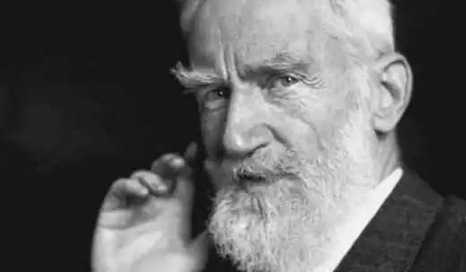
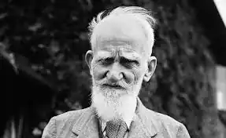

БЕРНАРД ШОУ
(1856-1950)
На межі XIX-XX століть у світовій драмі почали з'являтися нові типи драматичних конфліктів. Принципово новим у розвитку театру було те, що ідеї, а не особисті взаємини героїв стали головними, активними й драматичними учасниками сценічної дії. Саме Б. Шоу (Нобелівська премія — 1925 року) разом із Г. Ібсеном був "батьком" гостро соціальної, інтелектуальної драми, "драми ідей". Продовжуючи на новій основі традиції ібсенівського театру, Б. Шоу створив неповторно своєрідну драматургічну систему. Народився Б. Шоу 1856 року в Дубліні. Бунтівний характер юнака повставав проти мертвої і сухої системи шкільного навчання. За його словами, він "утік із класичної школи" саме тоді, коли йому "загрожували заняття Гомером". У 1871 році п'ятнадцятирічний Шоу починає працювати клерком. У 1876 році він переїздить до Англії. Але саме Ірландія, де всі соціальні, національні й релігійні суперечності епохи виявлялися особливо гостро, сформувала характер Шоу — одночасно бурхливий і глузливо-спокійний, такий, що поєднував жагу справедливості й уїдливий скептицизм. Наприкінці 70-х років Б. Шоу остаточно обирає шлях професійного літератора. Спочатку він створює романи, які цікаві насамперед із точки зору формування драматургічного методу Шоу. Стислі описи ситуацій, що нагадують сценічні ремарки, яскравий, часто насичений парадоксами діалог — усе це віщує у романісті майбутнього драматурга. У 80-ті роки Бернард Шоу працює літературним рецензентом, театральним оглядачем і музичним критиком у кількох газетах і журналах. Блискучі й оригінальні за викладом думок і парадоксальні за формою статті, підписані буквами G.B.S., привертають увагу публіки. Саме в цей час сформувалися і соціальні погляди Б. Шоу. У 80-ті роки він брав активну участь у діяльності Фабіанського товариства — соціал-реформістської організації, назва якої походить від імені римського полководця Фабія Кунктатора, який завдав вирішального удару карфагенському вождю Ганнібалу саме тому, що перед цим довго вичікував і не поспішав. Такої ж вичікувальної тактики щодо капіталізму й пропонували дотримуватися фабіанці. Вони вважали, що соціалізм можна побудувати шляхом поступових реформ, а не соціальних революцій. Боротьба за нове суспільство була для Шоу невіддільною від боротьби за таку драму, яка могла б поставити перед глядачем нагальні питання сучасності. Нічого подібного на англійській сцені того часу не було: за винятком традиційних шекспірівських вистав, у репертуарі театрів переважали мелодраматичні та псевдоісторичні п'єси. Б. Шоу почав створення нової драматургічної системи з пропаганди творчості Г. Ібсена. У 1891 році побачила світ книга Шоу "Квінтесенція ібсенізму". Головну мету "ібсенізму" Шоу вбачає у викритті буржуазної моралі, в руйнуванні фальшивих ідеалів. Новаторство Ібсена в галузі драми виявляється, на думку Шоу, в наявності гострих конфліктів і розумних, тонких дискусій. Дискусія стає невід'ємною частиною сучасної драми. У 1885 році Шоу створює свою першу п'єсу "Дома удівця", з якої почалася "нова драма" в Англії. Потім з'явилися "Волокита" (1893) і "Професія місіс Воррен" (1893-1894),— всі вони ввійшли до циклу "Неприємних п'єс". У передмові до збірки "Неприємних п'єс" Шоу писав, що глядач "стикається в них із жахливими і потворними виявами суспільного устрою Англії". Різкий викривальний пафос вирізняє найвизначнішу п'єсу циклу — комедію "Професія місіс Воррен", злу сатиру на вікторіанську Англію. Як і Ібсен, Шоу виявляє глибоку невідповідність між видимістю й сутністю, зовнішньою респектабельністю і внутрішнім убозтвом своїх героїв. Загострюючи сценічну ситуацію до гротеску, він робить головною героїнею повію, яка зібрала капітал, займаючись своїм ганебним ремеслом. Намагаючись виправдати себе перед донькою, вихованою в абсолютному незнанні джерела родинних прибутків, місіс Воррен малює їй страшну картину злиденного існування своєї сім'ї, що й підштовхнуло її до заняття проституцією. Але, як зізнається вона доньці, залишити свій прибутковий "промисел" і знехтувати законами суспільства, які виправдовують будь-які засоби досягнення багатства, місіс Воррен не може, тому що "любить наживати гроші". Шоу зображує місіс Воррен і як жертву несправедливого устрою суспільства, заснованого на безжальному пригніченні й експлуатації людини, і як його втілення, символ. При побудові п'єси Шоу керувався принципом ретроспективно-аналітичної композиції: в цьому відчувається значний вплив Ібсена. Пружина дії — поступове "пізнавання" правди, викриття минулого місіс Воррен. У фіналі п'єси конфлікт розв'язується після гострої дискусії між місіс Воррен та її донькою Віві, образ якої є першою спробою створення позитивного героя у творчості драматурга. Такими ж гостросатиричними були й п'єси наступного циклу — "П'єс приємних": "Зброя і людина" (1894), "Кандида" (1894), "Обранець долі" (1895), "Поживемо — побачимо" (1895— 1896). "П'єси приємні", за словами драматурга, "менш торкаються злочинів суспільства", висвітлюючи в основному "його романтичні помилки та боротьбу окремих осіб із цими помилками". У 1901 році Шоу опублікував новий цикл "П'єси для пуритан". Пояснюючи в передмові смисл загального заголовка, Шоу підкреслював, що він не ханжа й не боїться зображення почуттів, але він проти зведення усіх дій героїв лише до любовних мотивів. Якщо йти за цим принципом, стверджує драматург, "ніхто не може бути хоробрим, чи добрим, чи великодушним, якщо він ні в кого не закоханий". П'єса "Дім, де розбиваються серця" (1913-1917), закінчена наприкінці Першої світової війни, відкрила новий період творчості Шоу. Відповідальність за трагічні події сучасності Шоу поклав на англійську інтелігенцію, яка віддала долю Європи "під владу підступного невігластва і бездушної сили". На підтвердження цієї думки наприкінці п'єси виникає символічний образ корабля, що збився з курсу і пливе в невідомість з капітаном, який покинув свій капітанський місток, і командою, що байдуже очікує на страшну катастрофу. У п'єсі "Дім, де розбиваються серця" реалізм Шоу набуває нових рис. Драматург звертається до символіки, філософської алегорії, фантастики, політичного гротеску. У подальшому парадоксальність гротескових ситуацій і фантастичність художніх образів стають невід'ємною рисою його драматургії, особливо яскраво виявляючись у так званих політичних екстраваганціях. Вони мають проблемний зміст і служать сатиричній меті, відкриваючи читачеві чи глядачеві очі на істинний стан справ у сучасному політичному житті. В одній із таких п'єс — "Візочку з яблуками" (1929) — Шоу у гротескно-ексцентричній формі розкриває важливі особливості суспільно-політичної ситуації в Англії першої третини XX століття. У центрі п'єси — дискусія про політичну владу, яку провадять король Магнус і його кабінет міністрів Демократично обрані міністри обстоюють конституційний принцип правління у країні, король — принцип нічим не обмеженої самодержавної влади. Гостро сатирична, пародійна дискусія дає змогу Шоу висловити своє ставлення до державних інститутів влади, демократії і парламентаризму, показати, хто ж насправді керує країною. Істинна сутність державного конфлікту не стільки у протистоянні самодержавства та викритої Шоу демократії, скільки — "їх обох і плутократії". Плутократія, писав Шоу в передмові до п'єси, "зруйнувавши королівську силу під приводом захисту демократії, купила і знищила саму демократію". І король, і міністри не більше ніж маріонетки в політичній грі. "Король — це ідеал, створений купкою шахраїв, щоб зручніше було керувати країною, користуючись королем, як маріонеткою",— виголошує король Магнус. Шоу широко використовує в цій п'єсі прийоми гротеску та парадокса. За допомогою алогічних, парадоксальних ситуацій він показує штучність, потворність сучасної йому англійської держави та суспільства. У парадоксальну, але реалістичну за своїми витоками манеру Шоу починає потужним струменем вриватися фантастика, яка стає природним прийомом художнього втілення дійсності письменником-сатириком (наприклад, у п'єсі "Гірко, але правда" (1931)). Парадокси служать дуже серйозній меті: вони щохвилини примушують думку читача працювати, викликають почуття сумніву і недовіри до усього банального, загальноприйнятого, дотепно викривають стереотипи мислення і соціального життя, провокують читача до полеміки. Драматичний конфлікт виявляється в Шоу гострим зіткненням фальшивих уявлень про життя, вигаданих ідеалів, створених суспільством для приховування правди, із справжнім розумінням життя. Такий конфлікт реалізується в напруженій ідейній суперечці, драматичній дискусії, яка перемежовується з дією. Обговоренню підлягало все — проблеми, характери та вчинки дійових осіб. Перший акт у драмах Шоу — це найчастіше підготовка до диспуту, який розгоряється на повну силу й досягає кульмінації у другій чи третій дії. Дискусії, які ведуться у драмах, збагачуються новими доказами в передмовах — Шоу присвячує цілі сторінки аналізу нових наукових відкриттів, обговорює важливі гіпотези. Такий прийом — своєрідний заклик до того, щоб люди вчилися науково аналізувати відносини в суспільстві, стосунки в родині, проблеми виховання, освіти й навіть медицини. Відмову від традиційної художньої і сценічної достовірності заради широкої філософської дискусії в пізній драматургії Шоу високо оцінив Б. Брехт, який назвав англійського драматурга "творцем інтелектуального театру XX століття". Серед творів, написаних Б. Шоу до Першої світової війни, найширшої популярності набула комедія "Пігмаліон" (1912). Вихідною точкою для драматурга був античний міф про скульптора Пігмаліона, який створив статую морської богині Галатеї. Вражений красою власного витвору, Пігмаліон ублагав богиню кохання Афродіту вдихнути в Галатею живу душу. Статуя ожила і, перетворившись на прекрасну жінку, стала дружиною скульптора. Б. Шоу запропонував сучасний варіант прадавнього міфу: в центрі уваги письменника не всесильне кохання, а проблеми багатства особистості й можливості реалізації духовного й інтелектуального потенціалу людини. Крім того, порівняно з міфологічною історією, взаємини сучасних Пігмаліона та Галатеї такі заплутані й дивні, що мимоволі виникає питання: а чи не є вибір назви ще одним парадоксом Шоу? "Хто є хто" в дуеті головних героїв? Пігмаліон насправді створив свою Галатею, а Хіггінс лише "шліфує" особистість, яка поступово змінюється сама й змінює свого "перетворювача". Професор фонетики Хіггінс, який у драмі Шоу виступає своєрідним Пігмаліоном, укладає парі з полковником Пікерінгом, що він проведе науковий експеримент — за кілька місяців навчить вуличну торговку квітами Елізу Дулітл правильній вимові і зробить так, щоб "її з успіхом могли прийняти за герцогиню".